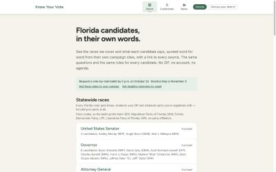

knowyour.vote, checked at 1440×900 on 2026-10-11. This is a proposal: no code was changed. The markdown version is README.md in the same folder.
og:image, a copyright grey area), or text only.
| Sev | Finding | Fix |
|---|---|---|
| critical | 680px column on a 1440px screen. More than half the width is empty. | 8 + 4 column grid at ≥1024px: ballot on the left, news on the right. |
| major | 4,310px tall with 1 image (the logo). All text. | Map, dates rail and tiles, built from our own data. |
| major | Every section is H2, grey paragraph, card list. The hero subhead is 50 words. | Vary section shapes; one-line subhead; explanations go into captions. |
| major | No masthead or dateline, so nothing says "today". | A dark strip with the date, days left and the next deadline. |
| minor | Inter body text is the default in AI-built UIs. | A serif for display text only (Newsreader or Source Serif 4). |
This is a wireframe in our own tokens. On phones, everything stacks into one column and the news rail comes after the ballot.
Every quote links to its source. No ZIP, no account.
Date, days left and the next deadline, from the dates DeadlineBanner already reads.
Newest first, no hand-picking, region tabs on metro. 97 items in total, 66 from the last 7 days, but only 9 statewide.
Past, today and upcoming states. This also closes Tier 1 #3 from the Oct 5 inspiration pass.
Counts from the live roster. Real numbers only, nothing estimated.
A Florida county SVG from our GeoJSON. The shading means "covered by this guide", never party.
Mail / early / Election Day. The early-voting dates come from the county office directory.
Openverse CC0 needs no key. Florida Memory is public domain. Never candidates, never partisan imagery.
0 of 299 have one today. The rule would be all or none per race. Federal official portraits are public domain; campaign photos need permission.
| Resource | Status | Use |
|---|---|---|
| Openverse (CC0 photos) | ready, no key | Photography band, About page |
| Iconify icon sets | ready | One consistent icon set across the site |
| Our county GeoJSON + district data | in repo | Coverage map |
| Firecrawl gov search | connected | Official dates, county pages, federal portraits |
| Image generation (Gemini/OpenAI), Higgsfield | connected | Textures and illustrations only; never people or candidates |
| Canva, Figma connectors | you authorize | Hand-off with the brand session (claude.ai connector settings) |
| Pixabay API key | optional | More polished stock photos |
| Florida Memory (State Archives) | public | Historic Florida civic photos |